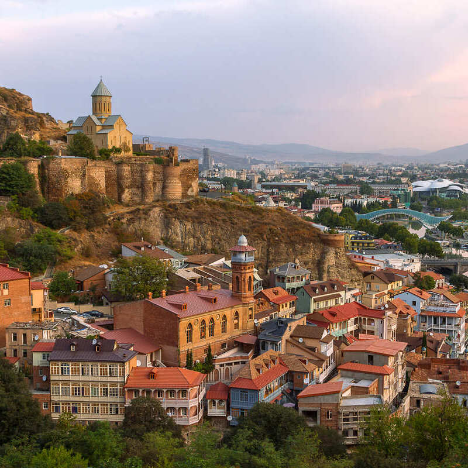
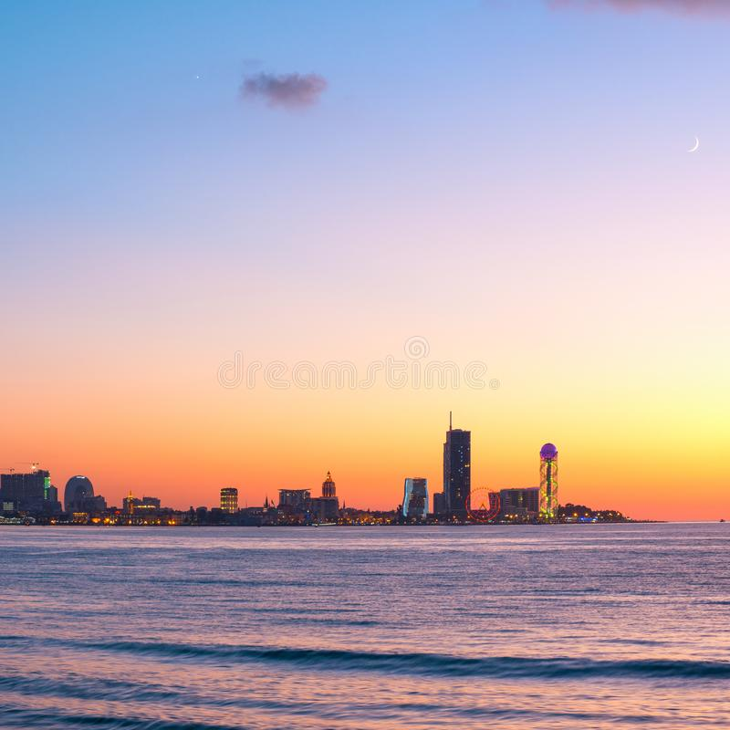
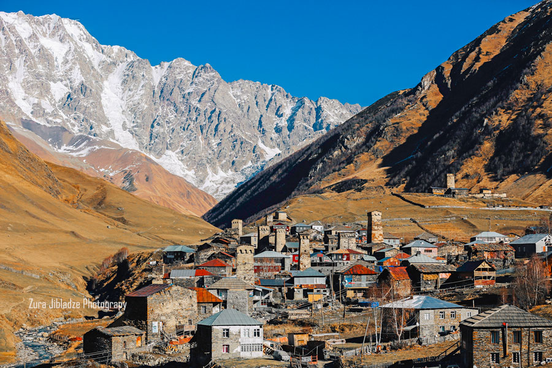
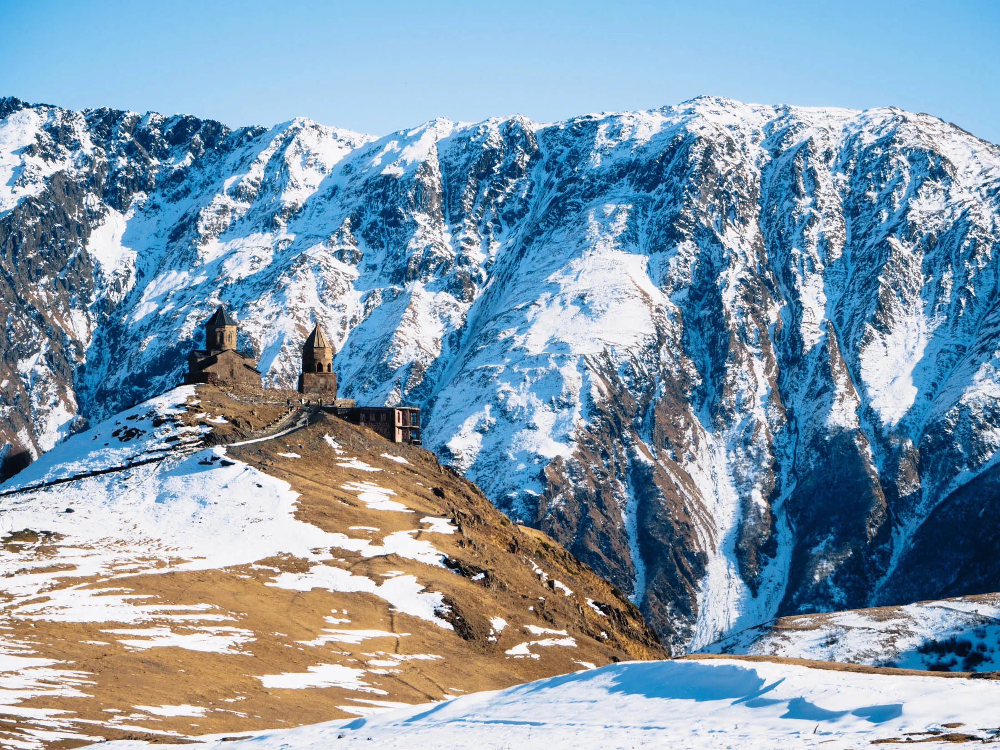
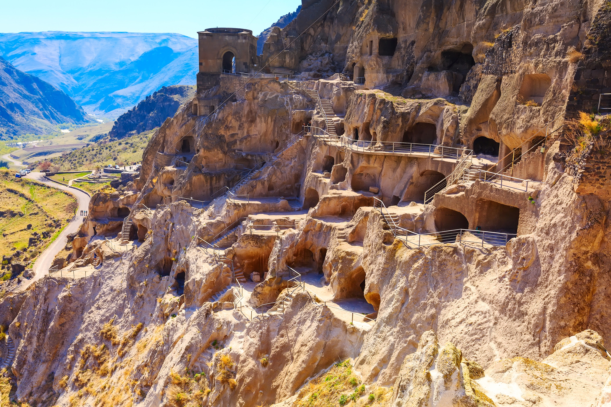

Spot 1: Tbilisi
Tbilisi is the capital of Georgia and is known for its rich history, beautiful architecture, and delicious food.
-Narikala Fortress is an ancient fortress located in the heart of Tbilisi, the capital city of Georgia. The fortress was built in the 4th century and was used to protect the city from invasions. Narikala is located on a hill overlooking the city and offers stunning views of Tbilisi's Old Town. The fortress has been damaged and rebuilt many times over the centuries, and today, visitors can explore the ruins of the fortress and learn about its history. Narikala is a popular tourist attraction in Tbilisi and is a great place to take in the city's history and architecture.
Spot 2: Batumi
Batumi is a coastal city located on the Black Sea coast of Georgia. It's known for its stunning beaches, lively atmosphere, and modern architecture. The city is home to a number of attractions, including the Batumi Boulevard, the Alphabet Tower, and the Batumi Botanical Garden.
- Batumi Boulevard: Batumi Boulevard is a beautiful promenade that runs along the coast of the city. It's a great place to take a walk, enjoy the sea breeze, and take in the stunning views of the Black Sea. The boulevard is also home to a number of cafes, restaurants, and entertainment venues.
- Alphabet Tower: The Alphabet Tower is a unique monument that pays tribute to the Georgian alphabet. The tower is 130 meters tall and has 33 floors, each of which is dedicated to a different letter of the Georgian alphabet. Visitors can take an elevator to the top of the tower for stunning views of the city.
- Batumi Botanical Garden: The Batumi Botanical Garden is a beautiful garden that's home to a wide variety of plants and trees from around the world. The garden is located on a hillside overlooking the Black Sea and offers stunning views of the surrounding area.
Spot 3: Svaneti
Svaneti is a mountainous region located in the northwest of Georgia. It's known for its breathtaking views, hiking trails, and medieval towers and churches.
- Hiking Trails: Svaneti is home to a number of hiking trails that offer stunning views of the surrounding mountains and valleys. Some of the most popular trails include the Chalaadi Glacier Trail, the Mestia to Ushguli Trail, and the Ushguli to Shkhara Glacier Trail.
- Medieval Towers and Churches: Svaneti is home to a number of medieval towers and churches that date back to the 9th century. Some of the most famous towers include the Ushguli Tower and the Mestia Tower. The region is also home to a number of beautiful churches, including the Tsminda Sameba Church and the Lamaria Church.
Spot 4: Kazbegi
Encircled by the Caucasus Mountains, the landscapes of Kazbegi are worth admiring for hours. Kazbegi is one of the most enchanting destinations in Georgia. Located on the military highway, the mountainous highway is close to Russia's border. Kazbegi is an ideal weekend getaway for mountain lovers. Kazbegi Municipality is known for its scenic location in the Greater Caucasus mountains, and it is a center for trekkers and mountain climbing. Local attractions include the Kazbegi Museum and Ethnographic Museum in town, and the Gergeti Trinity Church outside of town, as well as Mount Kazbegi itself. Stepantsminda is a townlet in the Mtskheta-Mtianeti region of north-eastern Georgia. Historically and ethnographically, the town is part of the Khevi province. It is the center of the Kazbegi Municipality
Spot 5: Vardzia
Vardzia is a cave monastery complex located in southern Georgia. It was built in the 12th century and is one of the country's most important cultural and historical landmarks. The complex is made up of a series of caves that were carved into the side of a cliff and is home to a number of beautiful frescoes that date back to the 12th and 13th centuries. Despite being partially destroyed by an earthquake in 1283, Vardzia continued to be used as a monastery until the 16th century. Today, Vardzia is one of Georgia's most popular tourist destinations and attracts visitors from all over the world.